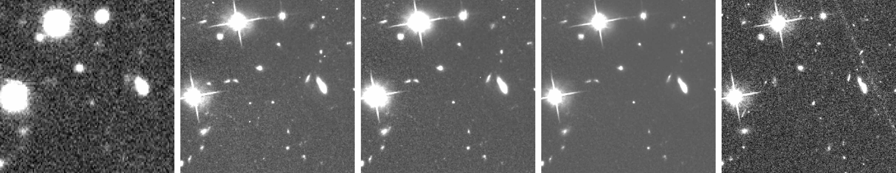
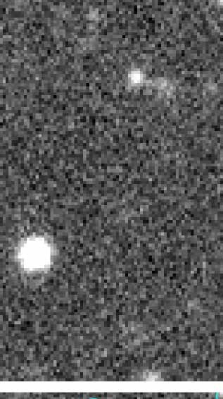
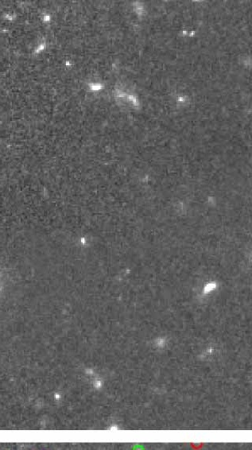
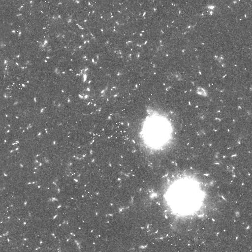
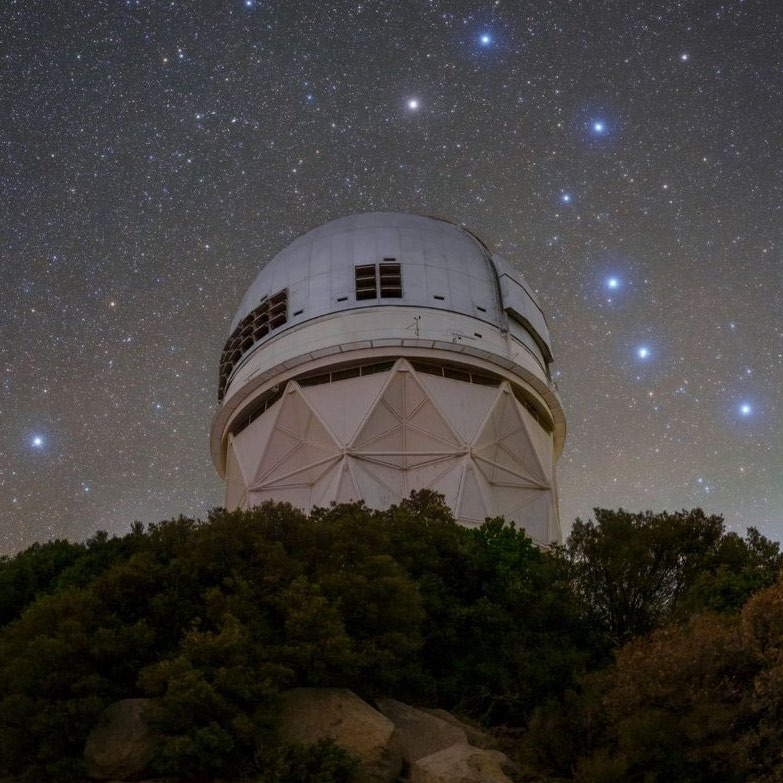

001
Diffraction & light
HST observation
Ground → space super-resolution
Conservative Flow-Matching forAstronomical Image Super-Resolution
* Equal contribution
02 — The fields
Drag to explore · Click for the original
HST observation
FluxFlow · Field A
HST observation
DESI observation
FluxFlow · Field B
HST observation
DESI observation
FluxFlow · Field C
Observed fields and reconstructed outputs from the original project. Original pixels, original sources.
03The method
FluxFlow transports a ground observation to a space-quality estimate along straight paths, weighted by how much each pixel can actually be trusted.
Pixel-space optimal-transport paths are straight, so the sampler is a short ODE —not a hundred stochastic steps. Observation uncertainty and source-region importance weight the objective, which is what keeps the model from spending capacity on the noise floor.
Every frame ships a per-pixel uncertainty map. Inverse-variance weighting plus a source-region term (WHT) stops ray trails and chip gaps from being memorised as signal.
MC-FS back-projects the residual through a Wiener-regularised inverse of the forward operator. It is training-free, and it is what suppresses hallucinated sources while keeping recovered detail.
04The problem
Ground-based telescopes are limited by atmospheric seeing, which imposes a stochastic, spatially varying PSF that upsampling alone cannot undo. Space telescopes reach the diffraction limit but see almost none of the sky.
The 2.4 m HST aperture is diffraction-limited above the atmosphere; DESI is seeing-limited from the ground. The same point source, resolved two ways.
Both ends are the paper's own ablation — w/o MC-FS at 0 and the full model at 100. The values in between are a visual blend, not measurements.
05The failure
Synthetic training pairs do not carry real atmospheric statistics, so a generator learns to please the eye. It produces crisp texture, and occasionally a source that was never in the sky.
Hover a method below to see how it renders the same sky — or drag the dial to move between the ablation and the full model.
06Overview
A conservative flow learns the structure. A measurement-consistent correction keeps it grounded in the observation.
x⁰ ~ N(0, I)
Short, straight-path ODE
Wiener residual correction
Structure + integrated flux
07 — The film / 01:38
The filmFluxFlow in ninety-eight seconds.
08 — THE SAMPLER
08The sampler, step by step
Scroll to step through the sampler.
08AInside the sampler
Measurement-consistent flow sampling. The velocity network proposes; the forward model disposes. Every step is projected back onto the observation — which is what keeps hallucinated sources out of the estimate.

3Conditional U-Net vθpixel space · base_dim = 48 · FiLM time conditioning, 256-d
4Euler stepx̃ = x + vθ Δt
5Forward projectionA = DsHPSF, σPSF = 2
7Corrected estimatex ← x̃ − ηi F−1(W F[Ds⊤r])01 · Weight the evidence
wp = 1σp2 · mp
Schematic, not a numbered paper equation · hst_wht.npy, hst_masks.npy
02 · Correct without retraining
W(k) = H*(k)|H(k)|2 + λSNR−1
Eq. (10) in the paper · removes sources the observation never had
03 · Settings as reported
ηi = η0 (1 − i/N) · optimum 1.92, rounded
04 · Ablation · weight term removed
Full model → w/o WHT · paper Table 3
05 · Algorithm 1 · MC-FS
Algorithm 1 MC-FS
inputs observation y, PSF h, steps N, base step eta_0
precompute W(k) from Eq. (10)
x <- x0 ~ N(0, I)
for i = 1 .. N do
xt <- x + v_theta(x, t_i, c) * dt Euler step
r <- A(xt) - y residual to forward model
eta_i <- eta_0 * (1 - i / N) linear decay
x <- xt - eta_i * F^-1(W * F[Ds^T r]) Wiener-corrected update
return xThe proposal is the network; the correction is the forward model.
git clone https://github.com/I2WM/FluxFlow
# inference settings as reported in the paper
# sampling steps N = 10 Euler steps
# base correction step eta_0 = 0.5 (eta_i = eta_0 (1 - i/N))
# Wiener regularisation lambda_SNR = 50
# forward PSF width sigma_PSF = 2 (data-driven optimum 1.92, rounded)
# correction mode adjoint --correction_mode adjoint swaps the Wiener
# inverse for a plain adjoint
# correction off --no_mcfm removes the correction entirely
#
# Check the repository README for the current command-line interface:
# https://github.com/I2WM/FluxFlow09Results
DESI–HST, 19,500 real co-registered pairs at ×2 and ×4. Astronomical restoration is judged by morphology and integrated flux, not by pixel-wise agreement.
Flux-L1 · ×2
2.959
lowest of every method compared
Best SSIM and best Flux-L1 at both scales; PSNR within 0.1 dB of the highest value.
10Qualitative
Real cutouts from the paper’s comparison figure, aligned across methods. One field, one scale. Drag the handle, or pick a method to put it under the divider.
11The data
Each sample is a co-registered DESI ground cutout and its HST counterpart, shipped with the per-pixel weight map the training objective needs, the source masks the detection metrics need, and the source catalogue the flux metrics need.
desi_sci.npyground observationhst_sci.npyspace ground truthhst_wht.npyinverse-variance weightshst_masks.npydetection evaluationhst_sources.npzsource-flux evaluationLayout documented in the repository. Scales ×2 and ×4; splits, normalisation and per-sample directories are all that a run needs.

12 — The research / The people
FluxFlow: Conservative Flow-Matching for Astronomical Image Super-Resolution.
13The paper
FluxFlow: Conservative Flow-Matching for Astronomical Image Super-Resolution
Preprint · arXiv 2605.03749
@inproceedings{liu2026fluxflow,
title = {{FluxFlow: Conservative Flow-Matching for
Astronomical Image Super-Resolution}},
author = {Liu, Shuhong and Ge, Xining and Cui, Ziteng and
Li, Liuzhuozheng and Chang, Gengjia and
Liu, Jun and Gu, Ziying and Li, Dong and
Chu, Xuangeng and Gu, Lin and Harada, Tatsuya},
note = {Preprint},
year = {2026},
url = {https://arxiv.org/abs/2605.03749}
}Every hyper‑parameter of MC‑FS is swept in the appendix. Drag a value: the three metrics move the way the paper reports. The curves encode the reported shape and the reported optima — they are not digitised data points, and no value here is invented.
Default γPSF = 2 HR pixels at both scales.
Default ξSNR = 50, the value used throughout Table 2.
Default η0 = 0.5, with per‑step decay ηi = η0(1 − i/N).
Default T = 10, all other MC‑FS hyper‑parameters at their defaults.
Photometric metrics are a proxy. The real question is whether a reconstruction makes the catalogue measurements better. Every number below is measured on the matched bright‑source set, under the same SEP segmentation footprint as the ground truth, with one common threshold Fthr = 0.5 nMgy at both scales.
Lower is better in every column. Magnitude and shear are dimensionless; stellar‑mass MAE is in Δ‑scaled nanomaggies.
| Method | Magnitude residual Δm | Stellar‑mass MAE | Shear residual | |||
|---|---|---|---|---|---|---|
| mean | median | mean | median | mean | median | |
| Bicubic | 0.758 | 0.637 | 7.767 | 1.537 | 0.148 | 0.122 |
| SwinIR | 0.649 | 0.300 | 8.197 | 0.762 | 0.149 | 0.116 |
| HAT | 0.542 | 0.192 | 7.962 | 0.524 | 0.151 | 0.112 |
| FISR | 0.561 | 0.230 | 8.014 | 0.608 | 0.165 | 0.133 |
| cGAN | 0.548 | 0.215 | 7.996 | 0.586 | 0.159 | 0.131 |
| GD‑Net | 0.664 | 0.393 | 7.659 | 1.025 | 0.166 | 0.131 |
| FluxFlow | 0.516 | 0.187 | 7.632 | 0.508 | 0.161 | 0.126 |
| Method | Magnitude residual Δm | Stellar‑mass MAE | Shear residual | |||
|---|---|---|---|---|---|---|
| mean | median | mean | median | mean | median | |
| Bicubic | 1.067 | 0.863 | 16.90 | 3.648 | 0.144 | 0.115 |
| SwinIR | 0.969 | 0.461 | 16.51 | 2.43 | 0.118 | 0.090 |
| HAT | 0.886 | 0.397 | 16.19 | 2.207 | 0.108 | 0.081 |
| FISR | 0.876 | 0.417 | 16.25 | 2.246 | 0.124 | 0.097 |
| cGAN | 0.902 | 0.460 | 16.42 | 2.440 | 0.135 | 0.109 |
| GD‑Net | 1.509 | 1.308 | 17.58 | 4.630 | 0.170 | 0.139 |
| FluxFlow | 0.851 | 0.389 | 16.07 | 2.131 | 0.117 | 0.091 |
What improves. FluxFlow returns the lowest magnitude residual and the lowest stellar‑mass MAE — on both the mean and the median, at both scales. At ×4 the magnitude residual improves from 0.886 (HAT, best baseline) to 0.851, and the mass MAE from 16.19 to 16.07 Δ‑nanomaggies.
What does not. Shear is the flat metric. It is set by the second‑moment tensor of each source, and its orthogonal failure mode is catalog‑level miscentering rather than image quality, so the ranking compresses: HAT stays the strongest baseline on shear, and FluxFlow lands just behind it rather than ahead.
Why the mass median is the headline. The median stellar‑mass MAE is where bright, cleanly segmented sources live; the mean is dragged by a handful of blended or badly segmented objects, which is why GD‑Net posts a competitive mean (7.659) but a median of 1.025.
DESI–HST is a cross‑survey benchmark: ground‑based seeing‑limited spectra‑era imaging on one side, space‑based diffraction‑limited imaging on the other. It is the only ground‑to‑space set in its comparison table, and one of only two that are both real and flux‑calibrated.
The resolution gap is dominated by atmospheric turbulence, not by pixel scale: a 11–14× ratio in FWHM (a 2.4 m space aperture against DESI's time-varying, spatially extended i‑band seeing). That is what makes DESI→HST super‑resolution substantially harder than benchmarks that rely on pixel‑scale downsampling alone.
| Dataset | Size | Real | Flux | Type |
|---|---|---|---|---|
| Miao et al. 2024 | 2,000 | ✓ | G→G | |
| Shan et al. 2025 | 9,383 | ✓ | G→G | |
| Song et al. 2024 | 1,597 | ✓ | S→G | |
| Reddy et al. 2024 | 2,880 | ✓ | G→S | |
| Luo et al. 2025 | 17,000 | ✓ | G→G | |
| Li et al. 2022 | 14,604 | ✓ | G→G | |
| Wu et al. 2025 | 54,738 | ✓ | ✓ | S→S |
| Zhang et al. 2026 | 120,000 | ✓ | S→G | |
| FluxFlow (ours) | 19,500 | ✓ | ✓ | G→S |
G ground‑based imaging · S space‑based imaging · → the direction of the super‑resolution mapping.
The same architecture, with the terms that need flux calibration switched off — the inverse‑variance term, the source‑importance term and the Wiener‑deconvolved measurement consistency are not available on these sets, so an ablated configuration is evaluated instead.
The honest caveat. AstroSR is distributed as RGB composites without absolute flux calibration, so total brightness is no longer conserved across the SDSS→HSC mapping. The Flux‑L1 column on that benchmark carries limited physical meaning and is reported only for completeness. The margins over regression baselines are markedly smaller than on DESI–HST, because neither dataset exposes super‑resolution under atmospheric aberration — the dominant degradation mode this method is built for is simply absent.
A source whose morphology has no preimage under A still produces a non‑zero forward residual, so it is penalised wherever the correction enforces y = A(x). Hallucinations are therefore not undetectable in principle — they are trajectories that exit the consistency set C(y), and the whole sampler is built to push them back in.
Minimising the mean‑square error over the Fourier‑domain filter, setting the variation to zero and solving gives the optimal filter W(k) = H*(k) / (|H(k)|² + λSNR−1).
Naive adjoint back‑projection contracts high‑frequency modes at a rate of |H(k)|² per step, so the loss accumulates into PSF‑scale smoothing across integration steps. Replacing that multiplier with the Wiener kernel keeps the cumulative transfer function stable at high frequencies and preserves the resolution gain the flow provides.
A normalised 2‑D Gaussian PSF of width γh, probed with a single point source of amplitude α, restricted to the band the LR observation actually supports, iterated for N Euler steps — giving an exact per‑mode recovery factor rather than a fixed‑point approximation.
W(k) → H*(k)/|H(k)|² = 1/H(k)
The exact inverse filter. Maximally amplifies high frequencies and is unstable wherever H(k) ≈ 0.
W(k) → ξSNR H*(k) → 0
The response stays proportional to the matched filter — equivalent, up to scaling, to the raw adjoint. This is exactly the variant the ablation calls w/o Wiener.
ξSNR therefore interpolates continuously between the two extremes, and controls how aggressively the deconvolution restores the high‑frequency content the PSF suppressed.
At N = 10 the naive recovery is visibly broader than the true PSF — the FWHM is enlarged from 4.71 to 6.78 HR pixels, while the Wiener‑corrected profile comes in at 4.85 and tracks the true PSF with in‑line width. The widening is a low‑pass effect, not noise amplification.
The honest caveat, in the paper's own analysis. If the iteration were run to convergence instead of a finite N, the fixed‑point per‑pixel variance evaluates to roughly 0.21 σ²n at the DESI–HST setting (γh = 2, kmax = π/4). Modest in absolute terms, but it is a substantial amplification of the noise power inside the narrow LR‑supported band, and the prefactor grows exponentially as kmax approaches Nyquist. The practical N = 10 keeps the recovery short of that fixed point — so in this regime the dominant pathology is the finite‑N low‑pass effect of Eq. 27, not the asymptotic noise amplification of Eq. 30.
| Ablation | Photometry | Detection | ||||
|---|---|---|---|---|---|---|
| PSNR ↑ | SSIM ↑ | Flux‑L1 ↓ | Prec ↑ | Rec ↑ | F1 ↑ | |
| w/ VAE | 28.90 | 0.593 | 5.075 | 0.859 | 0.211 | 0.3402 |
| w/ Bridge | 30.77 | 0.663 | 3.206 | 0.702 | 0.393 | 0.5019 |
| w/o WHT | 30.17 | 0.685 | 2.814 | 0.688 | 0.483 | 0.5272 |
| w/o Src | 31.16 | 0.711 | 3.098 | 0.729 | 0.464 | 0.5382 |
| w/o MC‑FS | 30.78 | 0.698 | 3.025 | 0.602 | 0.553 | 0.5256 |
| w/o Wiener | 30.79 | 0.699 | 3.031 | 0.708 | 0.448 | 0.5066 |
| Ours | 31.23 | 0.714 | 2.959 | 0.738 | 0.458 | 0.5412 |
The one that matters most. Without MC‑FS the sampler produces compact hallucination sources, and the table shows the signature: the highest recall in the whole study (0.553) together with a precision collapse to 0.602. The spurious peaks float as false positives and drag F1 to 0.5256, below the full model's 0.5412.
The quiet trade‑off. w/o WHT posts a marginally better Flux‑L1 (2.814 vs 2.959) — and that is reported rather than hidden, because it comes from fitting drizzle artefacts that overlap the source apertures. Without the WHT term the velocity field treats cosmic‑ray trails and chip gaps as valid targets and reproduces them in the reconstruction; the drops in PSNR, F1 and precision are the real cost.
Source weighting. A uniform loss is dominated by background pixels and cannot preferentially preserve the faint outer galaxy profiles that carry morphological and PSF‑shape information. The two weights are complementary: WHT filters data quality, source weighting emphasises scientifically informative regions.
Latent space. Moving the flow into a frozen SD‑VAE feature space costs 2.33 dB of PSNR and 0.121 of SSIM, and collapses recall to 0.211; the bridge variant that replaces the Gaussian source with a noisy bicubic mean recovers most of the photometry but still trails the full model on precision and F1.
| Scale | Metric | Method | |||||||
|---|---|---|---|---|---|---|---|---|---|
| Bicubic | EDSR | SRGAN | RCAN | SwinIR | HAT | FISR | Ours | ||
| ×2 | PSNR ↑ | 28.71 | 33.50 | 32.25 | 33.89 | 34.05 | 34.38 | 34.40 | 34.66 |
| ×2 | SSIM ↑ | 0.6945 | 0.7729 | 0.7501 | 0.7808 | 0.7812 | 0.7836 | 0.7859 | 0.7918 |
| ×2 | Flux‑L1 ↓ | 125.4 | 48.78 | 51.35 | 43.44 | 42.41 | 41.27 | 41.05 | 41.84 |
| ×4 | PSNR ↑ | 26.21 | 30.73 | 30.33 | 32.13 | 32.24 | 32.67 | 32.51 | 32.44 |
| ×4 | SSIM ↑ | 0.5993 | 0.6549 | 0.6522 | 0.6838 | 0.6881 | 0.6936 | 0.6891 | 0.6867 |
| ×4 | Flux‑L1 ↓ | 239.2 | 67.47 | 74.72 | 60.52 | 55.35 | 48.49 | 50.94 | 57.20 |
| Scale | Metric | Method | ||||||||
|---|---|---|---|---|---|---|---|---|---|---|
| Bicubic | EDSR | SRGAN | RCAN | ENLCA | SwinIR | HAT | FISR | Ours | ||
| ×2 | PSNR ↑ | 17.75 | 23.71 | 23.46 | 23.72 | 23.70 | 23.74 | 23.81 | 23.84 | 23.87 |
| ×2 | SSIM ↑ | 0.171 | 0.350 | 0.348 | 0.351 | 0.350 | 0.352 | 0.352 | 0.354 | 0.352 |
| ×2 | Flux‑L1 ↓ | 1916 | 213.6 | 165.9 | 226.3 | 216.1 | 223.1 | 193.3 | 192.5 | 198.7 |
Read this column with care. AstroSR is distributed as RGB composites without absolute flux calibration, so total brightness is not conserved across the SDSS→HSC mapping: its Flux‑L1 column carries limited physical meaning and is reported only for completeness.
What it wins. On STAR at ×2 the model takes the highest PSNR (34.66) and the highest SSIM (0.7918), with a top‑tier Flux‑L1 (41.84, behind FISR's 41.05 and HAT's 41.27). At ×4 it stays competitive with the strongest regression baselines — HAT leads PSNR at 32.67 against 32.44. On AstroSR at ×2 it takes the highest PSNR (23.87) and a competitive SSIM (0.352 against FISR's 0.354).
Reading it. FluxFlow trains in 16 h at ×2 and 47 h at ×4 — under 3% of the cost of the strongest Transformer regression baseline (HAT, 552 h / 549 h) and an order of magnitude less than the heaviest generative baseline at ×4 (AS‑Bridge, 360 h). Only the two cheapest baselines, cGAN and GD‑Net, train faster at ×2.
Every ConvBlock is Conv2d → LeakyReLU → FiLM → Conv2d → LeakyReLU. The FiLM layer applies a feature‑wise affine modulation conditioned on the time‑conditioning state τ, so the time signal is injected at every resolution rather than only at the input. The timestep t ∈ [0,1] is mapped to τ by a sinusoidal positional embedding followed by a two‑layer MLP of output dimension 256.
FluxFlow recovers the diffraction spikes of the central star and the morphology of the extended source, while avoiding the speckled background of AS‑Bridge.
On a bright central star surrounded by closely packed compact sources, FluxFlow reproduces the spike pattern and resolves the neighbouring sources without the merging or smearing seen in the baselines.
On a field with a saturated source in the upper‑left corner and several low‑SNR background galaxies, FluxFlow preserves faint background galaxies that Bicubic and GD‑Net erase, while reconstructing the saturated halo more cleanly than the speckled output of AS‑Bridge.
On a binary‑star field, FluxFlow reproduces the four‑pointed diffraction pattern on the lower companion together with surrounding faint sources — whereas regression baselines suppress the spike pattern and the generative baselines either over‑smooth or over‑sharpen the background.
The panels in the comparison gallery above are real cut‑outs sliced from the paper's own comparison grids — every one of the 42 tiles is a genuine render, not a reconstruction of one.